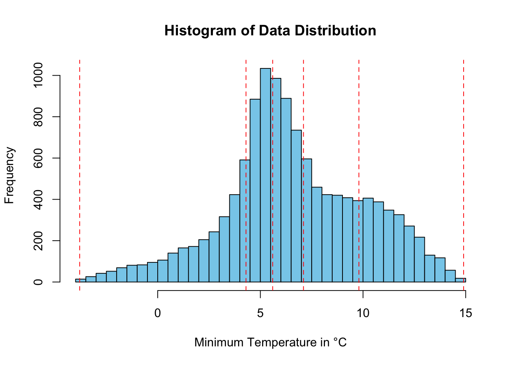
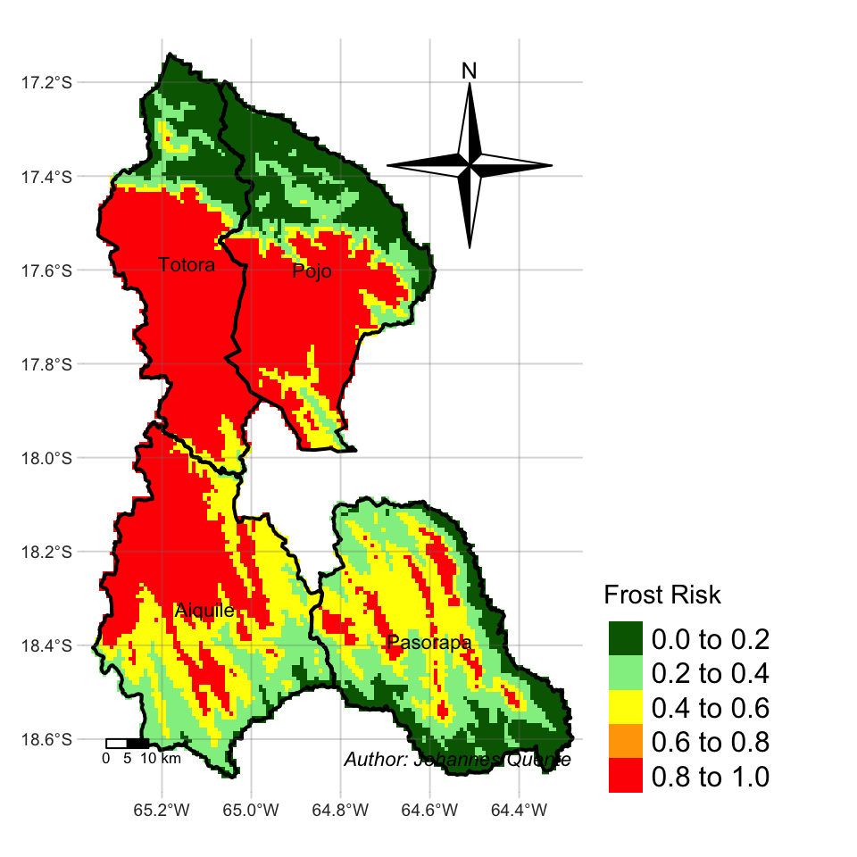
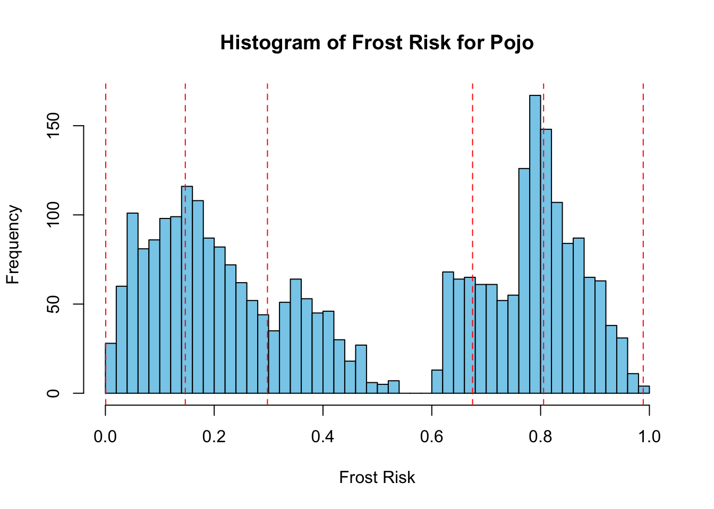
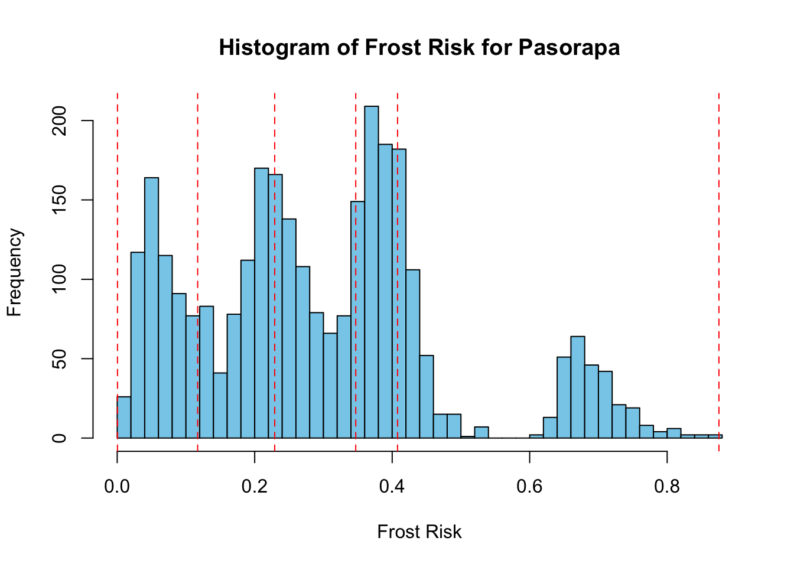
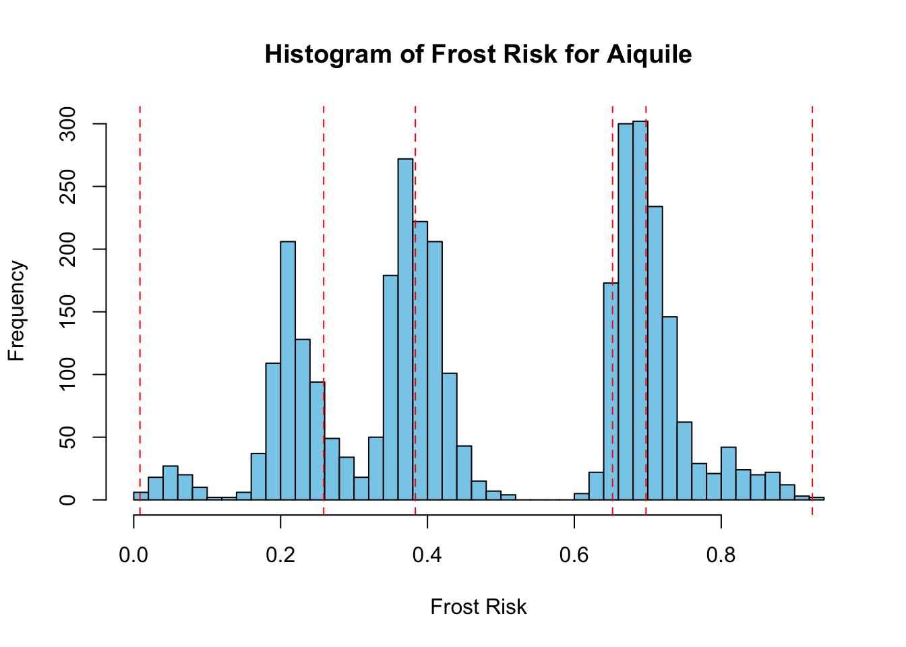
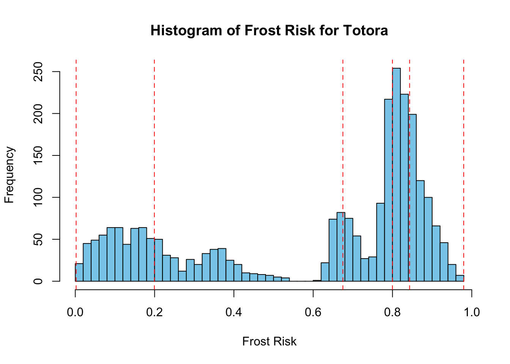

Frost poses a perennial threat to agricultural activities, often resulting in crop damage and substantial economic losses, particularly exacerbated by the lack of comprehensive information on frost occurrences Kotikot and Onywere (2014). This study focuses on mapping potential frost hotspots within Cochabamba’s Valle Alto region, encompassing Aiquile, Pasorapa, Pojo, and Totoro.
Assessing frost risk is crucial for agricultural hazard mapping and evaluating crop productivity in the Kenyan highlands. The adverse impacts of frost can be mitigated through systematic assessment of its occurrence probability, providing valuable insights to farmers and agricultural decision-makers.
From an agricultural climatology perspective, frost occurrences are not solely determined by specific temperature thresholds; rather, certain plants are susceptible to damage even at temperatures above freezing point. For instance, tropical crops like coffee and cocoa can be adversely affected by temperatures above zero degrees Celsius.
In the Andean Region of Cochabamba, local stakeholders have identified frost as a persistent threat to crops and livestock, particularly prevalent during the winter season (June - September).
Consequently, the creation of frost risk maps becomes imperative to aid decision-makers in territorial planning and disaster risk mitigation strategies. These maps were developed using a general risk equation approach, integrating factors such as threat and vulnerability through multicriteria evaluation techniques.
Following the risk equation approach, understanding the risk level in different zones requires identifying threats and vulnerabilities. Thus, the initial phase involved crafting maps related to threats and vulnerabilities. These maps identified zones susceptible to frost events at various intensity levels, derived from public available data surces (see Table 2.1).
Code
# | Source | Description |# | ------ | ----------- |# | [Springer](https://link.springer.com/article/10.1007/BF00865525) | Methodology for frost risk mapping based on regional weather data and local terrain analysis. |# | [Kenya University](https://ir-library.ku.ac.ke/bitstream/handle/123456789/11619/Application%20of%20GIS%20and%20remote%20sensing%20techniques.pdf?sequence=4) | Application of GIS and remote sensing techniques for frost risk mapping in the Aberdare ecosystem, Kenya. |# | [CSIRO](https://www.csiro.au/en/work-with-us/industries/agriculture/Sustainable-food-and-agriculture-systems/Climate-mitigation-and-adaptation-in-agriculture/Frost-Modelling) | Frost modelling system providing same-day maps of sub-zero temperatures in paddocks. |# | [Springer](https://link.springer.com/chapter/10.1007/978-3-642-58132-8_5) | Methodology for frost risk mapping based on regional weather data and local terrain analysis. |Local frost risk maps are indispensable for land use planning, agricultural management, and interpreting regional frost warnings, vital for implementing effective frost protection techniques in farming. |
This Multicriteria Analysis employs numerous Raster and Vector Layers, integrating weighted factors. The entire project is conducted within the R-Studio Environment. Key packages utilized in achieving the final results are listed here R-Studio Libraries, delivering essential functions for the conducted calculations.
Table 2.1 shows the data used in order to conduct the multicriteria analysis on the four municipalities in the Cono Sur Region in Cochabamba, Bolivia.
Table 2.2 presents the classification and evaluation of various criteria for drought exposure, illustrating the factors influencing each classification. This table outlines the criteria and their corresponding classifications as follows.
The subsequent sections present the reclassified data for four municipalities in the state of Cochabamba. These sections detail the process of cleaning and further processing the raw data, with relevant code snippets linked to the Appendix for reference.
Code
# Creating a tableshapes <-c("Political Map", "Min. Temperature", "DEM (Perspective)")data_type <-c("Vector", "Raster (30 s)", "Raster (15 s)")sources <-c("[gadm.org](https://gadm.org/download_country.html)","@fick2017worldclim", "[Hydrosheds.org](https://www.hydrosheds.org/hydrosheds-core-downloads)")period <-c("2024", "1970-2000", "2013")# Repeat the sources based on the number of shapesrepeated_sources <-rep(sources, length.out =length(shapes))# Create the data framedata <-data.frame(Data = shapes, Types = data_type, Source = repeated_sources, Period_Year = period)colnames(data) <-c("Data", "Types", "Source", "Period/Year")kable(data)
The temperature dataset, provided by Fick and Hijmans (2017) encompasses a comprehensive collection of global weather data with a spatial resolution of 30 arc seconds. This dataset serves as the basis for computing the minimum temperatures across 12 raster layers corresponding to different months. The resultant output is a single raster layer representing the lowest temperatures averaged over the period from 1970 to 2000. Reclassification was performed according to a predefined scheme outlined in Table 2.2.
The following code exemplifies the automation of processing procedures across four municipalities. Refer to the Appendix for the specific code implementation: Appendix.
Figure 2.1 illustrates the distribution of minimum temperature data through a histogram. This visualization supports the rationale behind reclassification into five equally distributed groups, each representing 20% of the total data frequency.
Code
# LOOP# Crear una lista con los nombres de los objetoslista_temp <-paste0("tmin", sprintf("%02d", 1:12)) # Generate names precip01 until precip12# Inicializar una lista vacía para almacenar los resultadoslista_tmin_mask <-list()# Iterar sobre cada objeto y aplicar las operacionesfor (i inseq_along(lista_temp)) {# Acceder al objeto con el nombre correspondiente tmin_obj <-get(lista_temp[i])# Aplicar las operaciones crop y mask tmin_crop <- terra::crop(tmin_obj, Aiquile) tmin_mask <-mask(tmin_crop, Aiquile)# Almacenar el resultado en la lista lista_tmin_mask[[i]] <- tmin_mask}# plot(lista_tmin_mask[[06]])# Stack the Values and calc the min for every values in the Rasterstack# Use rast() to convert the list to a SpatRaster objectstacked_rasters <- terra::rast(lista_tmin_mask)# Apply the cellStats function to find the minimum value for each pixel across the stackmin_values <- terra::app(stacked_rasters, fun = min, na.rm =TRUE)plot(min_values)# saveRDS(min_values, file = "min_temp_aiquile.rds")
Code
min_temp_pasorapa <-readRDS("min_temp_pasorapa.rds")min_temp_pojo <-readRDS("min_temp_pojo.rds")min_temp_aiquile <-readRDS("min_temp_aiquile.rds")min_temp_totora <-readRDS("min_temp_totora.rds")# Create a list of the SpatRaster objectsraster_list <-merge(min_temp_pasorapa, min_temp_pojo, min_temp_aiquile, min_temp_totora)# Specify the number of breaks (bins)num_breaks <-5break_values <-quantile(values(raster_list, na.rm =TRUE), probs =seq(0, 1, length.out = num_breaks +1))# Extract numeric valuesnumeric_breaks <-as.numeric(as.character(break_values))# Create the histogram with equal-frequency breakshist(values(raster_list), breaks ="FD", main ="Histogram of Data Distribution", xlab ="Minimum Temperature in °C", col ="skyblue", border ="black", plot =TRUE)# Add vertical lines to represent the breaksabline(v =quantile(values(raster_list, na.rm =TRUE), probs =seq(0, 1, length.out = num_breaks +1)), col ="red", lty =2)

Figure 2.1: Distribution of the Minimum Temperature Data
Code
# Temperature breaks for all municipalities# Define file namesfile_names <-c("min_temp_pasorapa.rds", "min_temp_pojo.rds", "min_temp_aiquile.rds", "min_temp_totora.rds")# Initialize an empty list to store numeric breaks for each municipalitynumeric_breaks_list <-list()# Loop over each file namefor (file_name in file_names) {# Read the raster file raster_data <-readRDS(file_name)# Calculate the numeric breaks break_values <-quantile(values(raster_data, na.rm =TRUE), probs =seq(0, 1, length.out = num_breaks +1)) numeric_breaks <-as.numeric(as.character(break_values))# Extract the municipality name from the file name municipality <-gsub(".rds", "", file_name)# Store the numeric breaks in the list with the municipality name as the key numeric_breaks_list[[municipality]] <- numeric_breaks}# Print the numeric breaks for each municipality# print(numeric_breaks_list)
Code
### Reclass# Create a tibble with the reclassification table# 0% 20% 40% 60% 80% 100%# -3.8 4.3 5.6 7.1 9.8 14.9reclass_table_min_temp <-tribble(~from, ~to, ~becomes,-3.8, 4.3, 1, 4.3, 5.6, 0.8, 5.6, 7.1, 0.4, 7.1, 9.8, 0.2,9.8, 14.9, 0)# Reclassify the slope raster based on the reclassification tablemin_temp_pasorapa_reclassified <- terra::classify(min_temp_pasorapa, reclass_table_min_temp, include.lowest =TRUE, right =TRUE)min_temp_pojo_reclassified <- terra::classify(min_temp_pojo, reclass_table_min_temp, include.lowest =TRUE, right =TRUE)min_temp_aiquile_reclassified <- terra::classify(min_temp_aiquile, reclass_table_min_temp, include.lowest =TRUE, right =TRUE)min_temp_totora_reclassified <- terra::classify(min_temp_totora, reclass_table_min_temp, include.lowest =TRUE, right =TRUE)
Code
# Define breaks and labels for the reclassificationbreaks <- break_valueslabels <-c("Muy bajo", "Bajo", "Moderado", "Alto", "Muy alto")# Cut the raster values into categorical factors# factor_raster <- cut(values(final_raster), breaks = breaks, labels = labels, include.lowest = TRUE)# change namenames(min_temp_aiquile_reclassified) <-"Frost Risk"# Color Palette in Rcolors <-c("darkgreen","lightgreen","yellow", "orange","red")# viewtmap_mode("plot")tm_shape(all_municipalities) +tm_polygons() +tm_shape(min_temp_aiquile_reclassified) +tm_raster(palette = colors) +tm_shape(min_temp_pasorapa_reclassified) +tm_raster(legend.show =FALSE, palette = colors) +tm_shape(min_temp_pojo_reclassified) +tm_raster(legend.show =FALSE, palette = colors) +tm_shape(min_temp_totora_reclassified) +tm_raster(legend.show =FALSE, palette = colors) +tm_shape(all_municipalities) +tm_borders(lwd =2, col ="black") +tm_layout(frame =FALSE) +tm_text("NAME_3", size =0.7) +tm_scale_bar(breaks =c(0, 5, 10), text.size =0.9, position =c("left")) +tm_compass(type ="4star", size =6, position =c("right", "top")) +tm_credits("Author: Johannes Quente", fontface ="italic", align ="right") +tm_graticules(alpha =0.3) +tm_layout(legend.text.size =1,legend.position =c("left", "bottom"),legend.outside =TRUE )

Figure 2.2: Reclassified Minimum Temperature
2.2.2 DEM (Perspective)
The provided Digital Elevation Model (DEM) consists of raster values showcasing variations in altitudes. These altitude values where converted into perspective data, therefore each pixel now showing the degree in which the groundstructure faces (0-360 degrees) using the terra::terrain("aspect") -function from the Terra package. The reclassification has been calculated according to Table 2.2.
Subsequently the slope data was categorized into varying degrees of possibility of drought (in %) based on their positioning due to facing the sun during the day. For further review of the reclassification code, please refer to the Appendix.
Figure 2.3: DEM derived Perspective reclassification
2.3 Results Frost Risk
Code
### Pasorapa# Resample aspect raster to match the extent and resolution of min_temp_pasorapa_reclassifiedaspect_resampled <- terra::resample(aspect_pasorapa_reclassified, min_temp_pasorapa_reclassified)# Adjusted weightsweight_temp_min <-0.75weight_aspect <-0.25# Perform the adjusted weighted combinationfinal_raster <- weight_temp_min * min_temp_pasorapa_reclassified + weight_aspect * aspect_resampledfinal_raster_pasorapa <- final_raster### Pojo# Resample aspect raster to match the extent and resolution of min_temp_pasorapa_reclassifiedaspect_resampled <- terra::resample(aspect_pojo_reclassified, min_temp_pojo_reclassified)# Perform the adjusted weighted combinationfinal_raster <- weight_temp_min * min_temp_pojo_reclassified + weight_aspect * aspect_resampledfinal_raster_pojo <- final_raster### Aiquile# Resample aspect raster to match the extent and resolution of min_temp_pasorapa_reclassifiedaspect_resampled <- terra::resample(aspect_aiquile_reclassified, min_temp_aiquile_reclassified)# Perform the adjusted weighted combinationfinal_raster <- weight_temp_min * min_temp_aiquile_reclassified + weight_aspect * aspect_resampledfinal_raster_aiquile <- final_raster### Totora# Resample aspect raster to match the extent and resolution of min_temp_pasorapa_reclassifiedaspect_resampled <- terra::resample(aspect_totora_reclassified, min_temp_totora_reclassified)# Perform the adjusted weighted combinationfinal_raster <- weight_temp_min * min_temp_totora_reclassified + weight_aspect * aspect_resampledfinal_raster_totora <- final_raster
Code
# Define the municipalitiesmunicipalities <-c("pojo", "pasorapa", "aiquile", "totora")# Set the number of breaks (bins)num_breaks <-5# Initialize an empty list to store numeric breaks for each municipalitynumeric_breaks_list <-list()# Loop over each municipalityfor (municipality in municipalities) {# Get the final raster data for the current municipality final_raster <-switch(municipality,pojo = final_raster_pojo,pasorapa = final_raster_pasorapa,aiquile = final_raster_aiquile,totora = final_raster_totora)# Compute the break values break_values <-quantile(values(final_raster, na.rm =TRUE), probs =seq(0, 1, length.out = num_breaks +1))# Store the numeric breaks in the list numeric_breaks_list[[municipality]] <-as.numeric(as.character(break_values))# Capitalize the first letter of the municipality name capitalized_municipality <-str_to_title(municipality)# Create the histogram with equal-frequency breakshist(values(final_raster), breaks =50, main =paste("Histogram of Frost Risk for", capitalized_municipality), xlab ="Frost Risk", col ="skyblue", border ="black", plot =TRUE)# Add vertical lines to represent the breaksabline(v = break_values, col ="red", lty =2)}

(a) Distribution of Pojo

(b) Distribution of Pasorapa

(c) Distribution of Aiquile

(d) Distribution of Totora
Figure 2.4: Data Distribution of the four Municipalities
Code
# Define breaks and labels for the reclassificationbreaks_list <-list(pojo = numeric_breaks_list$pojo,pasorapa = numeric_breaks_list$pasorapa,aiquile = numeric_breaks_list$aiquile,totora = numeric_breaks_list$totora)labels <-c("Muy bajo", "Bajo", "Moderado", "Alto", "Muy alto")# Initialize an empty list to store categorized rasters for each municipalitycategorized_rasters <-list()# Loop over each municipalityfor (municipality in municipalities) {# Get the final raster data for the current municipality final_raster <-switch(municipality,pojo = final_raster_pojo,pasorapa = final_raster_pasorapa,aiquile = final_raster_aiquile,totora = final_raster_totora)# Define breaks for the current municipality breaks <- breaks_list[[municipality]]# Cut the raster values into categorical factors factor_raster <-cut(values(final_raster), breaks = breaks, labels = labels, include.lowest =TRUE)# Change the name of the rasternames(final_raster) <-"Frost Risk"# Create a new raster with categorized values r_categorized <- final_rastervalues(r_categorized) <-as.factor(factor_raster)# Store the categorized raster in the list categorized_rasters[[municipality]] <- r_categorized}# Access categorized raster for a specific municipality# categorized_rasters$pasorapa
Fick, Stephen E., and Robert J. Hijmans. 2017. “WorldClim 2: New 1km Spatial Resolution Climate Surfaces for Global Land Areas.”International Journal of Climatology 37 (12): 4302–15. https://www.worldclim.org/data/worldclim21.html.
Kotikot, Susan Malaso, and Simon M Onywere. 2014. “Geocarto International Application of GIS and Remote Sensing Techniques in Frost Risk Mapping for Mitigating Agricultural Losses in the Aberdare Ecosystem, Kenya Application of GIS and Remote Sensing Techniques in Frost Risk Mapping for Mitigating Agricultural Losses in the Aberdare Ecosystem, Kenya” 30: 104–21. https://doi.org/10.1080/10106049.2014.965758.
Source Code
---title: "Frost Risk"editor_options: chunk_output_type: console---## Frame of Reference {#sec-sec-frost}Frost poses a perennial threat to agricultural activities, often resulting in crop damage and substantial economic losses, particularly exacerbated by the lack of comprehensive information on frost occurrences @Kotikot2014. This study focuses on mapping potential frost hotspots within Cochabamba’s Valle Alto region, encompassing Aiquile, Pasorapa, Pojo, and Totoro.Assessing frost risk is crucial for agricultural hazard mapping and evaluating crop productivity in the Kenyan highlands. The adverse impacts of frost can be mitigated through systematic assessment of its occurrence probability, providing valuable insights to farmers and agricultural decision-makers.From an agricultural climatology perspective, frost occurrences are not solely determined by specific temperature thresholds; rather, certain plants are susceptible to damage even at temperatures above freezing point. For instance, tropical crops like coffee and cocoa can be adversely affected by temperatures above zero degrees Celsius.In the Andean Region of Cochabamba, local stakeholders have identified frost as a persistent threat to crops and livestock, particularly prevalent during the winter season (June - September).Consequently, the creation of frost risk maps becomes imperative to aid decision-makers in territorial planning and disaster risk mitigation strategies. These maps were developed using a general risk equation approach, integrating factors such as threat and vulnerability through multicriteria evaluation techniques.Following the risk equation approach, understanding the risk level in different zones requires identifying threats and vulnerabilities. Thus, the initial phase involved crafting maps related to threats and vulnerabilities. These maps identified zones susceptible to frost events at various intensity levels, derived from public available data surces (see @tbl-data-Pasorapa-frost).\newpage```{r eval=FALSE}# | Source | Description |# | ------ | ----------- |# | [Springer](https://link.springer.com/article/10.1007/BF00865525) | Methodology for frost risk mapping based on regional weather data and local terrain analysis. |# | [Kenya University](https://ir-library.ku.ac.ke/bitstream/handle/123456789/11619/Application%20of%20GIS%20and%20remote%20sensing%20techniques.pdf?sequence=4) | Application of GIS and remote sensing techniques for frost risk mapping in the Aberdare ecosystem, Kenya. |# | [CSIRO](https://www.csiro.au/en/work-with-us/industries/agriculture/Sustainable-food-and-agriculture-systems/Climate-mitigation-and-adaptation-in-agriculture/Frost-Modelling) | Frost modelling system providing same-day maps of sub-zero temperatures in paddocks. |# | [Springer](https://link.springer.com/chapter/10.1007/978-3-642-58132-8_5) | Methodology for frost risk mapping based on regional weather data and local terrain analysis. |Local frost risk maps are indispensable for land use planning, agricultural management, and interpreting regional frost warnings, vital for implementing effective frost protection techniques in farming. |``````{r libraries}# read librarieslibrary(raster)library(terra)library(ggplot2)library(tmap)library(sf)library(dplyr)library(tibble)library(knitr)library(stringr)``````{r}bol <-read_sf("gadm41_BOL_3.shp", crs =4326)cocha <- bol %>%filter(NAME_1 =="Cochabamba")Pasorapa <- cocha %>%filter(NAME_3 =="Pasorapa")Aiquile <- cocha %>%filter(NAME_3 =="Aiquile")# newtotora <- cocha %>%filter(NAME_3 =="Totora")pojo <- cocha %>%filter(NAME_3 =="Pojo")# set extentall_municipalities <-rbind(Pasorapa, Aiquile, totora, pojo)```## Methodology of the Case StudyThis Multicriteria Analysis employs numerous Raster and Vector Layers, integrating weighted factors. The entire project is conducted within the R-Studio Environment. Key packages utilized in achieving the final results are listed here [R-Studio Libraries](#sec-sec-libraries), delivering essential functions for the conducted calculations.@tbl-data-Pasorapa-frost shows the data used in order to conduct the multicriteria analysis on the four municipalities in the Cono Sur Region in Cochabamba, Bolivia.@tbl-data-weights-def-frost presents the classification and evaluation of various criteria for drought exposure, illustrating the factors influencing each classification. This table outlines the criteria and their corresponding classifications as follows.The subsequent sections present the reclassified data for four municipalities in the state of Cochabamba. These sections detail the process of cleaning and further processing the raw data, with relevant code snippets linked to the Appendix for reference.```{r table_shapes}#| label: tbl-data-Pasorapa-frost#| tbl-cap: "Used Data in the Analysis"#| tbl-colwidths: [20, 20, 20]# Creating a tableshapes <-c("Political Map", "Min. Temperature", "DEM (Perspective)")data_type <-c("Vector", "Raster (30 s)", "Raster (15 s)")sources <-c("[gadm.org](https://gadm.org/download_country.html)","@fick2017worldclim", "[Hydrosheds.org](https://www.hydrosheds.org/hydrosheds-core-downloads)")period <-c("2024", "1970-2000", "2013")# Repeat the sources based on the number of shapesrepeated_sources <-rep(sources, length.out =length(shapes))# Create the data framedata <-data.frame(Data = shapes, Types = data_type, Source = repeated_sources, Period_Year = period)colnames(data) <-c("Data", "Types", "Source", "Period/Year")kable(data)``````{r}#| label: tbl-data-weights-def-frost#| tbl-cap: "Classification and evaluation of drought exposure according to factors"#| tbl-colwidths: [20, 10, 15, 15, 15, 10, 15]# Creating a sample data framedata <-data.frame(Criteria =c("Minimum Temperature", "DEM (Perspective)"),`Very High`=c("<5", "<45°"),High =c("5-7", "45-135°"),Moderate =c("7-10", "135-225°"),Low =c("", "225-315°"),`Very Low`=c(">10", ">315°"),`Weights`=c(7.5, 2.5))# Visualizing the table with kablekable(data, align ="c")``````{r eval=FALSE}#| label: tbl-land-reclass#| tbl-cap: "Reclassification table of the Land-Use Data"### Land Cover### Reclassraster_layer_with_new_extent <-rast("raster_layer_with_new_extent.tif")# reclass# Create a tibble with the reclassification tablereclass_table_land <-tribble(~from, ~to, ~becomes,1, 1, 1, 1, 2, 1, 2, 3, 1, 3, 4, 1, 4, 5, 1, 5, 6, 0, 6, 7, 0, 7, 8, 1, 8, 9, 0, 9, 10, 0, 10, 11, 1)# Assuming you have a slope raster 'slope_raster'# Reclassify the slope raster based on the reclassification tableland_reclassified <- terra::classify(raster_layer_with_new_extent, reclass_table_land, include.lowest =TRUE, right =TRUE)# Align Vegetation-Raster# geo_reclassified <- rast(geo_reclassified)# Adding a new column C to the data framereclass_table_land$Class <-c("Productivo Agropecuario, Extractivo Forestal","Productivo Agropecuario: Pastoreo, en sectores Cultivos alimenticios","Productivo Ganadero: Escaso pastoreo directo","Productivo: Alimenticios de consumo, subsistencia y mercado local.","Productivo Ganadero: Pastoreo directo, forrajeo de aves.","Extractivo Minero en parte","Productivo Aguas Superficiales Mixto","Productivo Agropecuario: Cultivos alimenticios","Extractivo Minero, Productivo Agropecuario, Protectivo, Vida silvestre","Recreativo: Escénico, Turístico","Productivo Agropecuario, Extractivo Forestal y Petrolero")kable(reclass_table_land)``````{r eval=FALSE}#| label: fig-land-use#| fig-cap: "Reclassification Result of Pasorapa"# checktmap_mode("plot")tm_shape(land_reclassified, labels ="New Legend Label") +tm_raster(style ="cat", palette ="Reds") +tm_scale_bar(breaks =c(0, 5, 10), text.size =0.9, position =c("left")) +tm_compass(type ="4star", size =6, position =c("right", "top")) +tm_credits("Data source: geo.gob.bo", fontface ="italic", align ="right") +tm_graticules(alpha =0.3) +tm_layout(legend.text.size =1,legend.position =c("left", "bottom"),legend.outside =TRUE )```\newpage### Minimum TemperatureThe temperature dataset, provided by @fick2017worldclim encompasses a comprehensive collection of global weather data with a spatial resolution of 30 arc seconds. This dataset serves as the basis for computing the minimum temperatures across 12 raster layers corresponding to different months. The resultant output is a single raster layer representing the lowest temperatures averaged over the period from 1970 to 2000. Reclassification was performed according to a predefined scheme outlined in @tbl-data-weights-def-frost.The following code exemplifies the automation of processing procedures across four municipalities. Refer to the Appendix for the specific code implementation: [Appendix](#sec-sec-temp-min).@fig-hist-precip-frost illustrates the distribution of minimum temperature data through a histogram. This visualization supports the rationale behind reclassification into five equally distributed groups, each representing 20% of the total data frequency.```{r eval=FALSE, temp_min_processing}# LOOP# Crear una lista con los nombres de los objetoslista_temp <-paste0("tmin", sprintf("%02d", 1:12)) # Generate names precip01 until precip12# Inicializar una lista vacía para almacenar los resultadoslista_tmin_mask <-list()# Iterar sobre cada objeto y aplicar las operacionesfor (i inseq_along(lista_temp)) {# Acceder al objeto con el nombre correspondiente tmin_obj <-get(lista_temp[i])# Aplicar las operaciones crop y mask tmin_crop <- terra::crop(tmin_obj, Aiquile) tmin_mask <-mask(tmin_crop, Aiquile)# Almacenar el resultado en la lista lista_tmin_mask[[i]] <- tmin_mask}# plot(lista_tmin_mask[[06]])# Stack the Values and calc the min for every values in the Rasterstack# Use rast() to convert the list to a SpatRaster objectstacked_rasters <- terra::rast(lista_tmin_mask)# Apply the cellStats function to find the minimum value for each pixel across the stackmin_values <- terra::app(stacked_rasters, fun = min, na.rm =TRUE)plot(min_values)# saveRDS(min_values, file = "min_temp_aiquile.rds")``````{r}#| label: fig-hist-precip-frost#| fig-cap: "Distribution of the Minimum Temperature Data"min_temp_pasorapa <-readRDS("min_temp_pasorapa.rds")min_temp_pojo <-readRDS("min_temp_pojo.rds")min_temp_aiquile <-readRDS("min_temp_aiquile.rds")min_temp_totora <-readRDS("min_temp_totora.rds")# Create a list of the SpatRaster objectsraster_list <-merge(min_temp_pasorapa, min_temp_pojo, min_temp_aiquile, min_temp_totora)# Specify the number of breaks (bins)num_breaks <-5break_values <-quantile(values(raster_list, na.rm =TRUE), probs =seq(0, 1, length.out = num_breaks +1))# Extract numeric valuesnumeric_breaks <-as.numeric(as.character(break_values))# Create the histogram with equal-frequency breakshist(values(raster_list), breaks ="FD", main ="Histogram of Data Distribution", xlab ="Minimum Temperature in °C", col ="skyblue", border ="black", plot =TRUE)# Add vertical lines to represent the breaksabline(v =quantile(values(raster_list, na.rm =TRUE), probs =seq(0, 1, length.out = num_breaks +1)), col ="red", lty =2)``````{r}# Temperature breaks for all municipalities# Define file namesfile_names <-c("min_temp_pasorapa.rds", "min_temp_pojo.rds", "min_temp_aiquile.rds", "min_temp_totora.rds")# Initialize an empty list to store numeric breaks for each municipalitynumeric_breaks_list <-list()# Loop over each file namefor (file_name in file_names) {# Read the raster file raster_data <-readRDS(file_name)# Calculate the numeric breaks break_values <-quantile(values(raster_data, na.rm =TRUE), probs =seq(0, 1, length.out = num_breaks +1)) numeric_breaks <-as.numeric(as.character(break_values))# Extract the municipality name from the file name municipality <-gsub(".rds", "", file_name)# Store the numeric breaks in the list with the municipality name as the key numeric_breaks_list[[municipality]] <- numeric_breaks}# Print the numeric breaks for each municipality# print(numeric_breaks_list)``````{r}### Reclass# Create a tibble with the reclassification table# 0% 20% 40% 60% 80% 100%# -3.8 4.3 5.6 7.1 9.8 14.9reclass_table_min_temp <-tribble(~from, ~to, ~becomes,-3.8, 4.3, 1, 4.3, 5.6, 0.8, 5.6, 7.1, 0.4, 7.1, 9.8, 0.2,9.8, 14.9, 0)# Reclassify the slope raster based on the reclassification tablemin_temp_pasorapa_reclassified <- terra::classify(min_temp_pasorapa, reclass_table_min_temp, include.lowest =TRUE, right =TRUE)min_temp_pojo_reclassified <- terra::classify(min_temp_pojo, reclass_table_min_temp, include.lowest =TRUE, right =TRUE)min_temp_aiquile_reclassified <- terra::classify(min_temp_aiquile, reclass_table_min_temp, include.lowest =TRUE, right =TRUE)min_temp_totora_reclassified <- terra::classify(min_temp_totora, reclass_table_min_temp, include.lowest =TRUE, right =TRUE)``````{r}#| label: fig-min-temp#| fig-cap: "Reclassified Minimum Temperature"#| fig-width: 5#| fig-height: 5# Define breaks and labels for the reclassificationbreaks <- break_valueslabels <-c("Muy bajo", "Bajo", "Moderado", "Alto", "Muy alto")# Cut the raster values into categorical factors# factor_raster <- cut(values(final_raster), breaks = breaks, labels = labels, include.lowest = TRUE)# change namenames(min_temp_aiquile_reclassified) <-"Frost Risk"# Color Palette in Rcolors <-c("darkgreen","lightgreen","yellow", "orange","red")# viewtmap_mode("plot")tm_shape(all_municipalities) +tm_polygons() +tm_shape(min_temp_aiquile_reclassified) +tm_raster(palette = colors) +tm_shape(min_temp_pasorapa_reclassified) +tm_raster(legend.show =FALSE, palette = colors) +tm_shape(min_temp_pojo_reclassified) +tm_raster(legend.show =FALSE, palette = colors) +tm_shape(min_temp_totora_reclassified) +tm_raster(legend.show =FALSE, palette = colors) +tm_shape(all_municipalities) +tm_borders(lwd =2, col ="black") +tm_layout(frame =FALSE) +tm_text("NAME_3", size =0.7) +tm_scale_bar(breaks =c(0, 5, 10), text.size =0.9, position =c("left")) +tm_compass(type ="4star", size =6, position =c("right", "top")) +tm_credits("Author: Johannes Quente", fontface ="italic", align ="right") +tm_graticules(alpha =0.3) +tm_layout(legend.text.size =1,legend.position =c("left", "bottom"),legend.outside =TRUE )```\newpage### DEM (Perspective)The provided Digital Elevation Model (DEM) consists of raster values showcasing variations in altitudes. These altitude values where converted into perspective data, therefore each pixel now showing the degree in which the groundstructure faces (0-360 degrees) using the `terra::terrain("aspect")` -function from the Terra package. The reclassification has been calculated according to @tbl-data-weights-def-frost.Subsequently the slope data was categorized into varying degrees of possibility of drought (in %) based on their positioning due to facing the sun during the day. For further review of the reclassification code, please refer to the [Appendix](#sec-sec-aspect).```{r load_perspective}# read_dataaspect_pasorapa <-rast("aspect_pasorapa.tif")aspect_aiquile <-rast("aspect_aiquile.tif")aspect_totora <-rast("aspect_totora.tif")aspect_pojo <-rast("aspect_pojo.tif")``````{r}#| label: tbl-perspective#| tbl-cap: "Reclassification table of the Geology Data"### Reclass# Create a tibble with the reclassification tablereclass_table_aspect <-tribble(~from, ~to, ~becomes,-Inf, 45, 1,45, 135, 0.25,135, 225, 0,225, 315, 0.25,315, Inf, 1)# Reclassify the slope raster based on the reclassification tableaspect_pasorapa_reclassified <- terra::classify(aspect_pasorapa, reclass_table_aspect, include.lowest =TRUE, right =TRUE)aspect_aiquile_reclassified <- terra::classify(aspect_aiquile, reclass_table_aspect, include.lowest =TRUE, right =TRUE)aspect_totora_reclassified <- terra::classify(aspect_totora, reclass_table_aspect, include.lowest =TRUE, right =TRUE)aspect_pojo_reclassified <- terra::classify(aspect_pojo, reclass_table_aspect, include.lowest =TRUE, right =TRUE)``````{r}#| label: fig-perspective#| fig-cap: "DEM derived Perspective reclassification"#| fig-width: 5#| fig-height: 5colors <-c("darkgreen","lightgreen","yellow", "orange","red")# change namenames(aspect_aiquile_reclassified) <-"Frost Risk"tm_shape(all_municipalities) +tm_polygons() +tm_shape(aspect_aiquile_reclassified) +tm_raster(palette = colors) +tm_shape(aspect_pasorapa_reclassified) +tm_raster(legend.show =FALSE, palette = colors) +tm_shape(aspect_pojo_reclassified) +tm_raster(legend.show =FALSE, palette = colors) +tm_shape(aspect_totora_reclassified) +tm_raster(legend.show =FALSE, palette = colors) +tm_shape(all_municipalities) +tm_borders(lwd =2, col ="black") +tm_layout(frame =FALSE) +tm_text("NAME_3", size =0.7) +tm_scale_bar(breaks =c(0, 5, 10), text.size =0.9, position =c("left")) +tm_compass(type ="4star", size =6, position =c("right", "top")) +tm_credits("Author: Johannes Quente", fontface ="italic", align ="right") +tm_graticules(alpha =0.3) +tm_layout(legend.text.size =1,legend.position =c("left", "bottom"),legend.outside =TRUE )```\newpage## Results Frost Risk```{r}### Pasorapa# Resample aspect raster to match the extent and resolution of min_temp_pasorapa_reclassifiedaspect_resampled <- terra::resample(aspect_pasorapa_reclassified, min_temp_pasorapa_reclassified)# Adjusted weightsweight_temp_min <-0.75weight_aspect <-0.25# Perform the adjusted weighted combinationfinal_raster <- weight_temp_min * min_temp_pasorapa_reclassified + weight_aspect * aspect_resampledfinal_raster_pasorapa <- final_raster### Pojo# Resample aspect raster to match the extent and resolution of min_temp_pasorapa_reclassifiedaspect_resampled <- terra::resample(aspect_pojo_reclassified, min_temp_pojo_reclassified)# Perform the adjusted weighted combinationfinal_raster <- weight_temp_min * min_temp_pojo_reclassified + weight_aspect * aspect_resampledfinal_raster_pojo <- final_raster### Aiquile# Resample aspect raster to match the extent and resolution of min_temp_pasorapa_reclassifiedaspect_resampled <- terra::resample(aspect_aiquile_reclassified, min_temp_aiquile_reclassified)# Perform the adjusted weighted combinationfinal_raster <- weight_temp_min * min_temp_aiquile_reclassified + weight_aspect * aspect_resampledfinal_raster_aiquile <- final_raster### Totora# Resample aspect raster to match the extent and resolution of min_temp_pasorapa_reclassifiedaspect_resampled <- terra::resample(aspect_totora_reclassified, min_temp_totora_reclassified)# Perform the adjusted weighted combinationfinal_raster <- weight_temp_min * min_temp_totora_reclassified + weight_aspect * aspect_resampledfinal_raster_totora <- final_raster``````{r}#| label: fig-histogram-distribution#| fig-cap: "Data Distribution of the four Municipalities"#| fig-subcap: #| - "Distribution of Pojo"#| - "Distribution of Pasorapa"#| - "Distribution of Aiquile"#| - "Distribution of Totora"#| layout-nrow: 2# Define the municipalitiesmunicipalities <-c("pojo", "pasorapa", "aiquile", "totora")# Set the number of breaks (bins)num_breaks <-5# Initialize an empty list to store numeric breaks for each municipalitynumeric_breaks_list <-list()# Loop over each municipalityfor (municipality in municipalities) {# Get the final raster data for the current municipality final_raster <-switch(municipality,pojo = final_raster_pojo,pasorapa = final_raster_pasorapa,aiquile = final_raster_aiquile,totora = final_raster_totora)# Compute the break values break_values <-quantile(values(final_raster, na.rm =TRUE), probs =seq(0, 1, length.out = num_breaks +1))# Store the numeric breaks in the list numeric_breaks_list[[municipality]] <-as.numeric(as.character(break_values))# Capitalize the first letter of the municipality name capitalized_municipality <-str_to_title(municipality)# Create the histogram with equal-frequency breakshist(values(final_raster), breaks =50, main =paste("Histogram of Frost Risk for", capitalized_municipality), xlab ="Frost Risk", col ="skyblue", border ="black", plot =TRUE)# Add vertical lines to represent the breaksabline(v = break_values, col ="red", lty =2)}``````{r}# Define breaks and labels for the reclassificationbreaks_list <-list(pojo = numeric_breaks_list$pojo,pasorapa = numeric_breaks_list$pasorapa,aiquile = numeric_breaks_list$aiquile,totora = numeric_breaks_list$totora)labels <-c("Muy bajo", "Bajo", "Moderado", "Alto", "Muy alto")# Initialize an empty list to store categorized rasters for each municipalitycategorized_rasters <-list()# Loop over each municipalityfor (municipality in municipalities) {# Get the final raster data for the current municipality final_raster <-switch(municipality,pojo = final_raster_pojo,pasorapa = final_raster_pasorapa,aiquile = final_raster_aiquile,totora = final_raster_totora)# Define breaks for the current municipality breaks <- breaks_list[[municipality]]# Cut the raster values into categorical factors factor_raster <-cut(values(final_raster), breaks = breaks, labels = labels, include.lowest =TRUE)# Change the name of the rasternames(final_raster) <-"Frost Risk"# Create a new raster with categorized values r_categorized <- final_rastervalues(r_categorized) <-as.factor(factor_raster)# Store the categorized raster in the list categorized_rasters[[municipality]] <- r_categorized}# Access categorized raster for a specific municipality# categorized_rasters$pasorapa``````{r}#| label: fig-all-results-frost#| fig-cap: "Result: Frost Risk for each Municipality"#| fig-width: 5#| fig-height: 5# change namenames(categorized_rasters$pojo) <-"Frost Risk"tm_shape(all_municipalities) +tm_polygons() +tm_shape(categorized_rasters$pojo) +tm_raster(palette = colors) +tm_shape(categorized_rasters$pasorapa) +tm_raster(legend.show =FALSE, palette = colors) +tm_shape(categorized_rasters$aiquile) +tm_raster(legend.show =FALSE, palette = colors) +tm_shape(categorized_rasters$totora) +tm_raster(legend.show =FALSE, palette = colors) +tm_shape(all_municipalities) +tm_borders(lwd =2, col ="black") +tm_layout(frame =FALSE) +tm_text("NAME_3", size =0.7) +tm_scale_bar(breaks =c(0, 5, 10), text.size =0.9, position =c("left")) +tm_compass(type ="4star", size =6, position =c("right", "top")) +tm_credits("Author: Johannes Quente", fontface ="italic", align ="right") +tm_graticules(alpha =0.3) +tm_layout(legend.text.size =1,legend.position =c("left", "bottom"),legend.outside =TRUE )``````{r eval=FALSE}# Results Frost Risk - Land #| label: tbl-weight-flood-agriculture#| tbl-cap: "Final Weightings for the Reclassification - Land Use"# Resample rasters to align resolutionsland_reclassified <- terra::resample(land_reclassified, final_raster)land_reclassified[land_reclassified ==0] <-NAresult_2 <- (final_raster * land_reclassified)``````{r eval=FALSE}# Colors # library(RColorBrewer)# display.brewer.all()# change namenames(final_raster) <-"Frost Risk"# Breaksbreaks <-c(0, 0.3, 0.4, 0.5, 0.6, 0.65, 0.7, 0.75, 0.8, 1)# viewtmap_mode("plot")tm_shape(result_2) +tm_raster(style ="cont", palette ="Reds", breaks = breaks) +# Change style to "cont" or "cat"tm_scale_bar(breaks =c(0, 5, 10), text.size =0.9, position =c("left")) +tm_compass(type ="4star", size =6, position =c("right", "top")) +tm_credits("Author: Johannes Quente", fontface ="italic", align ="right") +tm_graticules(alpha =0.3) +tm_layout(legend.text.size =1,legend.position =c("left", "bottom"),legend.outside =TRUE )```